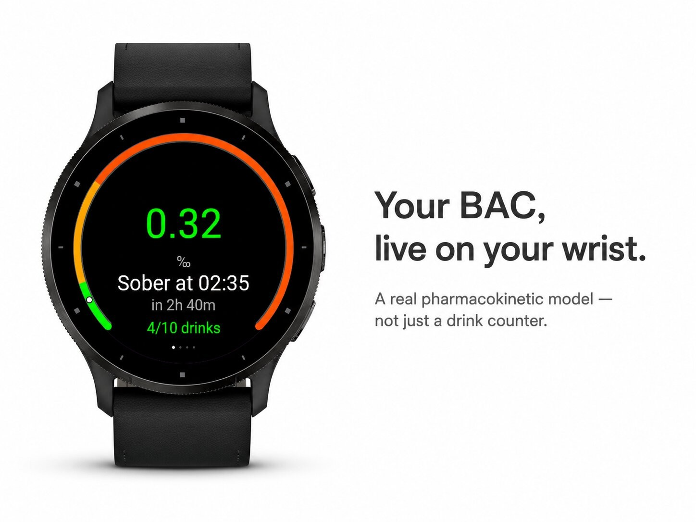
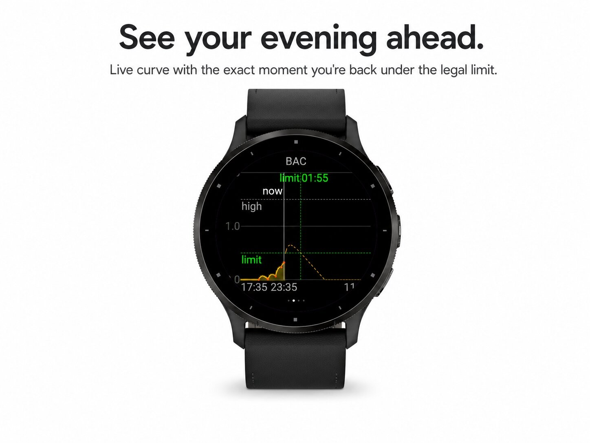
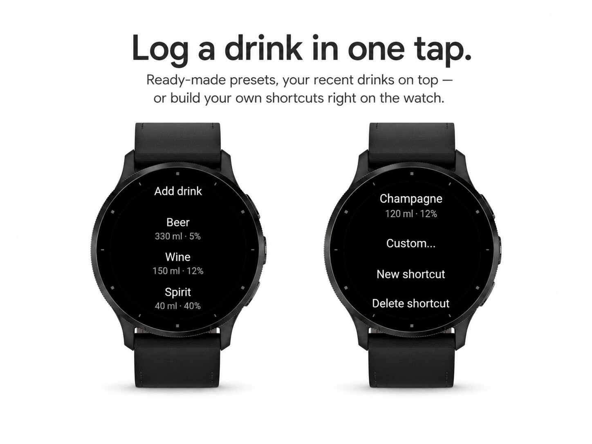
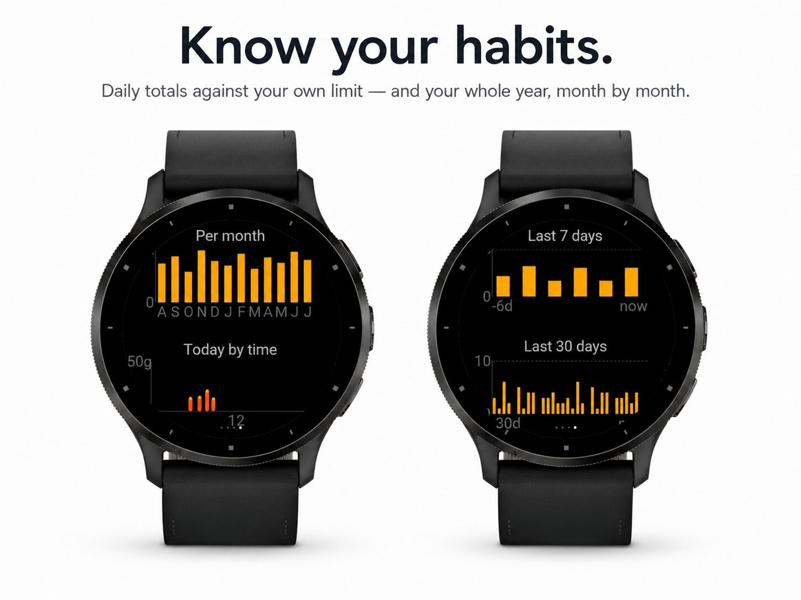
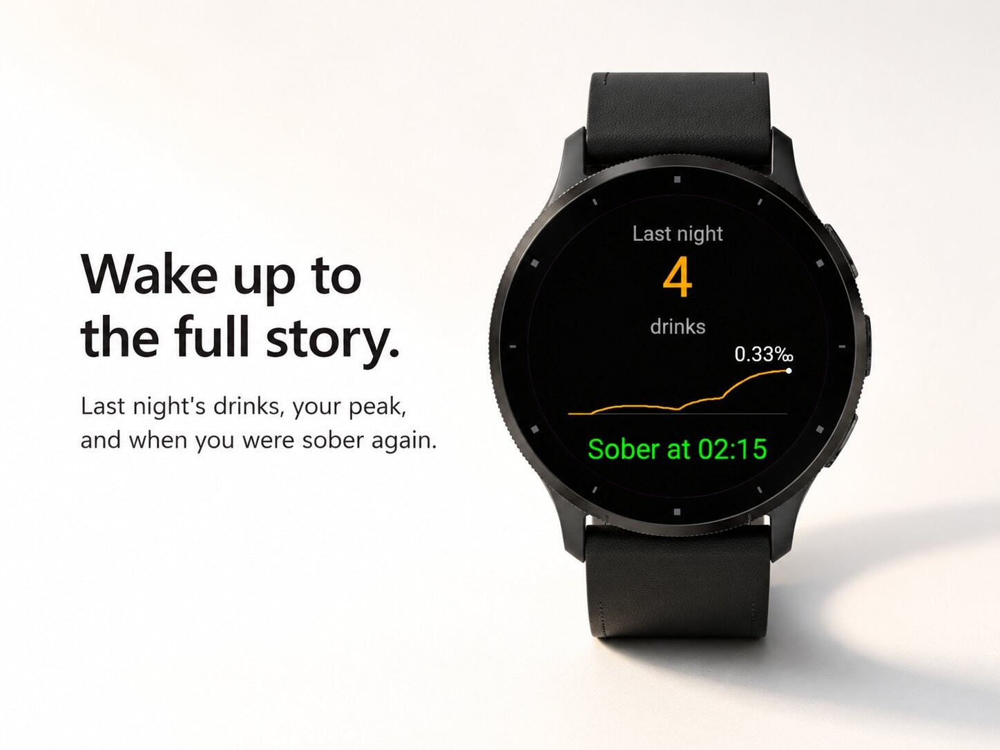

Health & habits · Device app
Blood-alcohol estimate, live, on your wrist.





Sobr is a blood alcohol (BAC) tracker that lives on your wrist. Log a drink in one tap and Sobr shows your estimated BAC in real time, when it will drop back under your own personal threshold, and when you'll be fully sober — all computed with a real pharmacokinetic model, not just a drink counter.
Sobr models how alcohol actually moves through your body: absorption after each drink and a constant elimination rate, personalised with your weight, height and sex (Widmark method). The result is a live curve that rises while you drink and falls as your body clears the alcohol — including drinks that haven't fully hit you yet.
The threshold is fully configurable and entirely personal. Set it to whatever matters to you — a cut-off for logging another round, a level below which you allow yourself tomorrow's workout, or simply zero. Sobr never tells you what a level means; it just tells you when you're under it.
Sobr provides estimates only. Actual BAC varies from person to person and drink to drink. No amount of alcohol is safe for driving. Never use this app to decide whether you can drive or operate machinery — if you've been drinking, don't drive. Not a medical device.